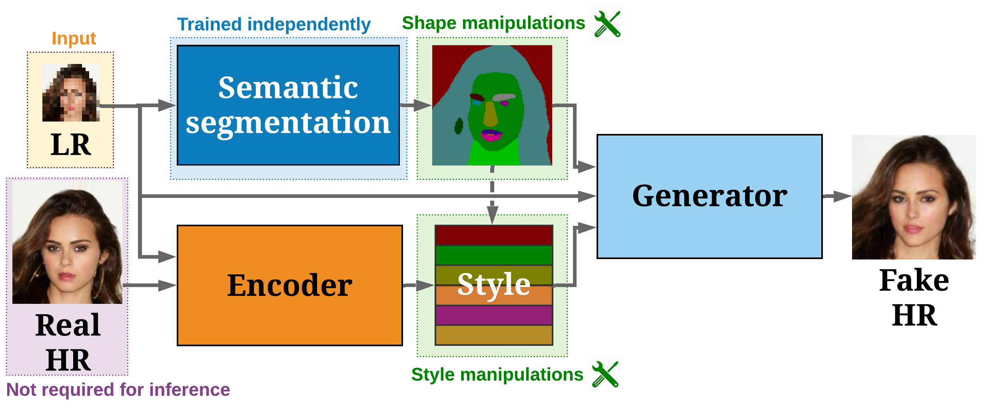

DeepSEE:
Deep Disentangled Semantic
Explorative Extreme
Super-Resolution
Abstract
Super-resolution (SR) is by definition ill-posed. There are infinitely many plausible high-resolution variants for a given low-resolution natural image. This is why example-based SR methods study upscaling factors up to 4x (or up to 8x for face hallucination). Most of the current literature aims at a single deterministic solution of either high reconstruction fidelity or photo-realistic perceptual quality. In this work, we propose a novel framework, DeepSEE, for Deep disentangled Semantic Explorative Extreme super-resolution. To the best of our knowledge, DeepSEE is the first method to leverage semantic maps for explorative super-resolution. In particular, it provides control of the semantic regions, their disentangled appearance and it allows a broad range of image manipulations. We validate DeepSEE for up to 32x magnification and exploration of the space of super-resolution.
Citation
Bühler, M.C., Romero, A. and Timofte, R., 2020.
DeepSEE:
Deep Disentangled Semantic Explorative Extreme
Super-Resolution.
arXiv preprint arXiv:2004.04433.
Bibtex
{kind=link}
{kind=link}
{kind=link}
Method
Our generator upscales low-resolution input (LR) conditioned on both a semantic layout and a style matrix. This allows to control the appearance, as well as the size and shape of each region in the semantic layout. By modifying these conditional inputs, DeepSEE can generate a multitude of potential solutions and explore the solution space.
Acknowledgements
This work was partly supported by the ETH Zürich Fund (OK), a Huawei Technologies Oy (Finland) project, an Amazon AWS and an NVIDIA grant.